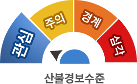

산림뉴스
블로그
산림청 유튜브
[#가고가고캠페인] "가져와서 고마워, 가져가서 고마워!"(Feat.올바른산행문화)
코로나 19 이후 산행인구가 급격히 증가했다는 사실, 알고계신가요? 요즘 나홀로 산행을 하며 '클린 하이킹'을 실천하는 분들이 정말 많은데요, 올바른 산행문화 개선을 위해 " #가고가고캠페인 "이 진행됩니다.
누리소통망
산불경보 발령
- 산불경보 : 관심단계
- 발령일시 : 2021.11.01
- 발령지역 : 전국

실시간산불정보
더보기- 진화중 0 건
- 진화완료 0 건
- 산불외종료 0 건